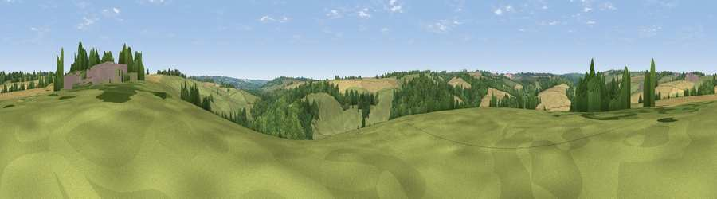

Viewpoint near Naunton
#38690 in England · top 77% of its area beats it · near Naunton · access?Where it is
The exact computed spot (SP 13425 22625). Click the marker for map links.
Public access: no public right of way or access land is recorded at this exact spot — it may be on private land. Computed from Natural England's CRoW access layer and OpenStreetMap rights of way — not the legal definitive map. Always verify locally.
The view, rendered

A 360° render of this exact spot computed from the terrain model, tree cover and land cover — summer colours, afternoon light, calibrated against photographs of famous viewpoints. Real trees, hedges and buildings will differ in detail.
The panorama
Grey silhouette: terrain skyline in each direction (720 bearings, Earth curvature and refraction included). Dashed green: skyline with trees (+15 m) and buildings (+8 m) as obstacles. Blue strip: how far the ground is visible on each bearing.
Where the view opens
Wedge length = distance to the farthest visible ground on that bearing (vegetation-aware). Rings at 10, 25 and 50 km.
What fills the view
45% grassland · 31% cropland · 23% woodland · 1% built-up
Angular shares of the visible panorama (visual magnitude), not map area. Landscape diversity 0.48 (0–1 Shannon).
Key numbers
More beautiful places nearby
The staircase of upgrades: each row has a higher view potential than everything closer. Driving times are estimates from straight-line distance, calibrated against real road routing — check an actual route before setting out.
| Place | Direction | Drive | Score |
|---|---|---|---|
| Viewpoint near Upper Slaughter | NNE · 2 km | ~6 min | 31.1 |
| Grange Hill | NW · 3 km | ~8 min | 33.8 |
| Viewpoint near Guiting Power | W · 4 km | ~9 min | 40.2 |
| Viewpoint near Temple Guiting | NNW · 5 km | ~11 min | 47.2 |
| Viewpoint near Bourton-on-the-Water | SSE · 6 km | ~12 min | 47.5 |
| Viewpoint near Wyck Rissington | E · 7 km | ~14 min | 58.7 |
| Viewpoint near Icomb | E · 7 km | ~14 min | 63.9 |
| Roel Hill | WNW · 8 km | ~17 min | 67.6 |
51.90201, -1.80628 · source: screening · position refined by local search. Computed location — check access rights before visiting.